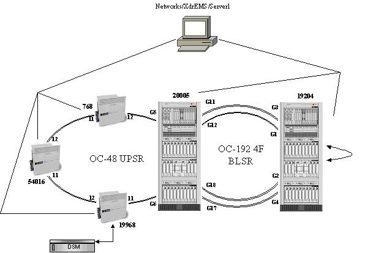
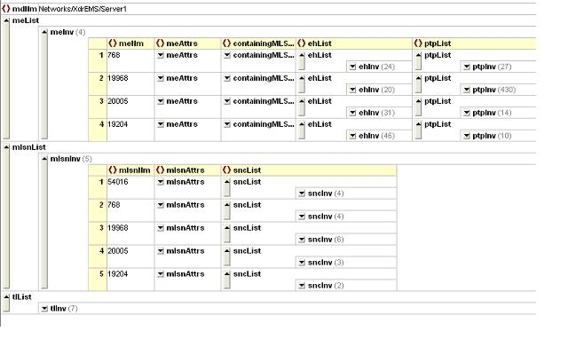

This test suite will be used to support the process of validating the conformance of a product implementing MTOSI Rel 1.1 Services partially or completely.
The chosen approach is driven by the MTOSI Services specification. Each MTOSI Service is organized in Interfaces which in turn specify one or more Operations. To some exceptions, there is one test specified for each MTOSI Operation.
MTOSI Rel 1.1 exposes the following services and interfaces:
| Services | Interfaces |
|---|---|
| ConfigurationService | |
| InventoryRetrieval | |
| ManagedElementMgr | |
| EquipmentInventoryMgr | |
| MultiLayerSubnetworkMgr | |
| OSMgr | |
| ProtectionMgr | |
| TransmissionDescriptorMgr | |
| DiscoveryService | |
| DiscoveryService | |
| FaultService | AlarmRetrieval |
| NotificationService | |
| NotificationBroker | |
| NotificationConsumer | |
| NotificationProducer |
The same structure is used to organize the test suite with the following exceptions:
- there is no test for the DiscoveryService and its unique getAllCapabilities Operation;
- there is no test for the "subscribe" and "unsubscribe" operations of the NotificationService
The tests are elaborated based on the specification of the corresponding operations as described in the wsdl and xsd files from [2] and following the appropriate requirement(s) from [1].
The requirements in [1] are organized in five different categories:
The test suite covers the functional behavior of the MTOSI operations according to category II requirements in [1].
Requirements not covered in the test suite:Other requirements from the other categories or related to CCV Security and Dynamic Naming in category I.
Implementation related aspects such as performance, security or specific programming language adaptation (MTOSI specifies an abstract API and does not mandate any requirements on those aspects).
The MEPs supported by the MTOSI operations and notifications are documented in [3]. They belong to two different communication styles (synchronous and asynchronous) and four communication patterns:
| Test Identification | Test Category: MTOSI Interface: Test Name: Test Number: |
|---|---|
| 517 Requirement | |
| Operation | |
| Pre-conditions | |
| Test Case |
Request:
Header Parameters:
Body Parameters:
Response:
Xml Examples:
Request Response
|
| Post-conditions | |
| Comments |
The following figure shows the template for fine-grain operations:
| Test Identification | Test Category: MTOSI Interface: Test Name: Test Number: |
|---|---|
| 517 Requirement | |
| Operations | |
| Pre-conditions | |
| Test Case |
Operation:
Request body parameters:
Response:
XML Examples:
Operation:
Request body parameters:
Response:
XML Examples:
....
|
| Exceptions | |
| Post-conditions | |
| Comments |
The following figure shows the template for notify operation (Notification Service):
| Test Identification | Test Category: MTOSI Interface: Test Name: Test Number: |
|---|---|
| 517 Requirement | |
| Operation | |
| Pre-conditions | |
| Test Case |
Notification Body Parameters:
Description:
XML Example:
|
| Post-conditions | |
| Comments |
Beyond the text specification the operations of the test suite are illustrated by concrete examples of requests and responses as XML files. These examples (requests/responses) are elaborated on the basis of the lab network which is presented in [5]. The figure below shows the network topology.

As shown in the figure, the network modeled is made of five managed elements (MEs) organized in two rings.
Despite the richness of this example based on a real lab network, not all the MTOSI operations have been supported.The test files are organized per MTOSI Interface within directory TestsDefinitions. This directory also contains the common files needed (stylesheet and schema) for the display of the test cases templates in html: